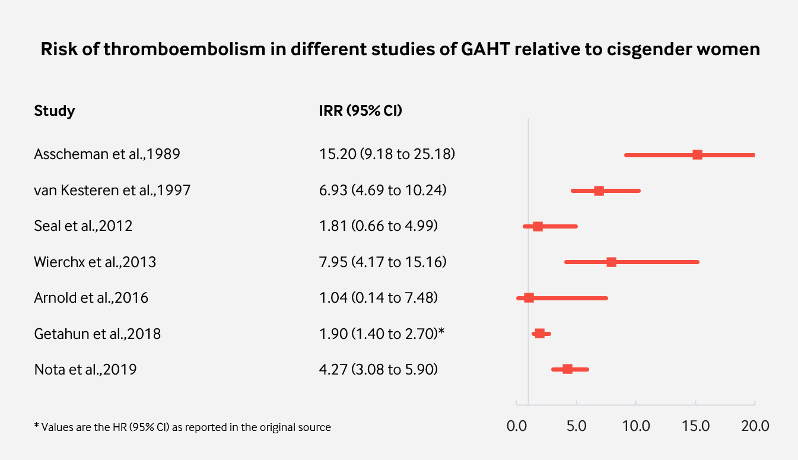
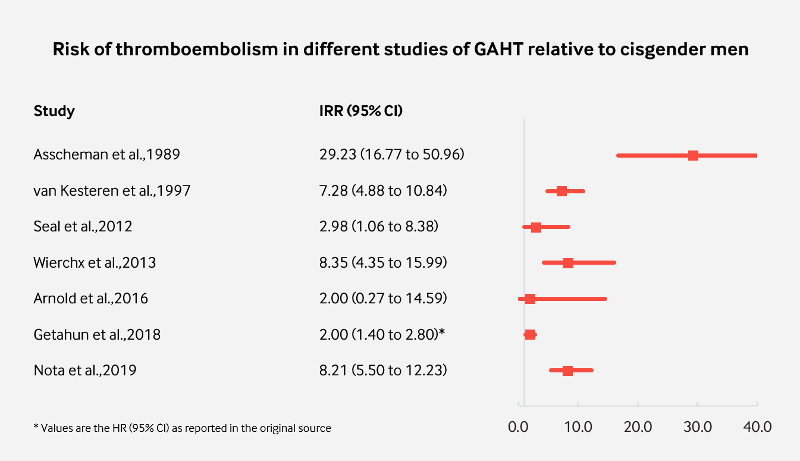
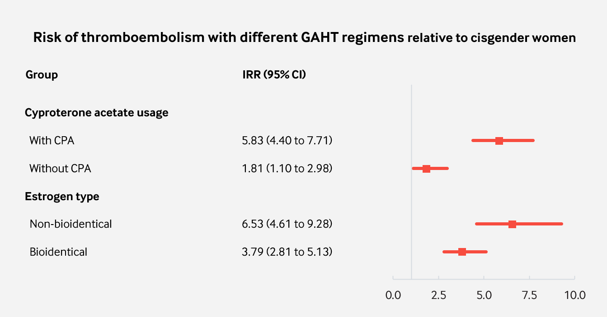

Analysis of Studies Assessing the Risk of Thromboembolism with Transfeminine Hormone Therapy
By Sam | First published May 19, 2020 | Last modified October 5, 2020
Abstract / TL;DR
See the Summary of Evidence section at the end of the article.
Background
Venous thromboembolism (VTE) is the umbrella term that includes deep vein thrombosis (DVT) and pulmonary embolism (PE) (Tritschler et al., 2018). A thrombosis is a blood clot that forms in a vein; usually within the leg, whereas an embolism is a thrombosis that has broken off from the original site and blocked the flow of blood inside a blood vessel. VTE can cause permanent damage to organs such as the lungs or even lead to death (The Lancet Haematology, 2015). Thankfully, the incidence of thromboembolism is relatively low in the general population. However, age is an important independent risk factor for VTE (Silverstein et al., 1998). Men and women under the age of 50 have less than a 100 cases per 100,000 people per year incidence of VTE. But thereafter, risk increases rapidly with age. By the age of 80, men have an incidence of approximately 1,000 cases per 100,000 people per year.
Thromboembolism is of significance to the field of gender-affirming hormone therapy (GAHT) as estrogens and some progestogens are associated with an increased incidence of VTE. A 2018 meta-analysis of clinical trials, case-control and cohort studies of menopausal hormone therapy (MHT) found that oral but not non-oral estradiol at low doses is associated with mildly greater risk of VTE (Rovinski et al., 2018). This finding has been attributed to the disproportionate amount of liver exposure that occurs with the oral route of administration (Kuhl, 2005). However, the doses of estrogens used in MHT are usually much lower than those used in GAHT. Moreover, high doses of progestins, such as cyproterone acetate, are commonly used in clinical practice to suppress testosterone levels to the female range. As such, the incidence of VTE that occurs with estrogen therapy in GAHT is, overall, likely to be greater than that observed in studies of postmenopausal women.
Analysis
Previously, I investigated thromboembolic and cardiovascular toxicity with high dose parenteral estrogen therapy in the treatment of prostate cancer (Sam, 2020). I thought it would be interesting to perform an investigation into the risk of these side effects in transgender women. Additionally, I wanted to see if any association could be found between different types of regimens.
Many studies have quantified the risk of VTE in transfeminine people with gender-affirming hormone therapy (Asscheman, Gooren & Eklund, 1989; van Kesteren et al., 1997; Dittrich et al., 2005; De Cuypere et al., 2005; Ott et al., 2010; Mueller et al., 2011; Seal et al., 2012; Wierckx et al., 2013; Wierckx et al., 2014; Gava et al., 2016; Arnold et al., 2016; Getahun et al., 2018; Nota et al., 2019). Unfortunately, a recurring problem in many of these studies is the extremely low number of patient follow-up years. Because studies with small numbers of follow-up years may significantly underestimate or overestimate the prevalence of adverse effects, they have poor statistical precision. Therefore, it makes it difficult to draw conclusions from their findings. In my own analysis, I excluded any study that had fewer than 1,000 patient follow-up years. Consequently, there were seven studies available for analyses.
Of the seven remaining studies, all but one were retrospective. In four studies, cyproterone acetate was used in all or most patients, while other antiandrogens were used in most or all of the patients in the other three studies. In the first three studies, most or all of the patient follow-up was for therapy with non-bioidentical estrogens. Bioidentical estrogens were used in the latter four studies. For each study, I calculated the crude incidence rate. Using data from a 25-year population study (Silverstein et al., 1998), I was then able to calculate the incidence rate ratio (IRR) with a 95% confidence interval relative to age-matched cisgender men and women for each study and for therapy with and without cyproterone acetate and for the type of estrogen (non-bioidentical or bioidentical) using the method described here.
In Getahun et al. (2018), a much different methodology and definition of VTE to other studies was used. Therefore, the number of VTE cases reported was much higher than what would have been expected with the methodology in Silverstein et al. (1998). I used the hazard ratios (HR) as reported in the original paper in order to avoid presenting an IRR vastly higher than what was really observed. Therefore, my analysis is limited by this discrepancy.
A summary of the details for each study can be found here.
The results of these analysis are presented below.
|  |
|---|
| Figure 1: Incidence of VTE in studies of GAHT with more than 1,000 follow-up years relative to cisgender women. |
|  |
|---|
| Figure 2: Incidence of VTE in studies of GAHT with more than 1,000 follow-up years relative to cisgender men. |
|  |
|---|
| Figure 3: Incidence of VTE grouped by association with different GAHT regimens. |
Summary of Evidence
Many retrospective and prospective studies have aimed to quantify the risk of thromboembolism with gender-affirming hormone therapy. In the studies with the best statistical precision, feminising hormone therapy with estrogens and antiandrogens is associated with a modest to strong increase in the risk of thromboembolism relative to age-matched cisgender men and women. However, the most severe increase was observed only with ethinylestradiol; a non-bioidentical estrogen. Non-bioidentical estrogens are known to have a much greater influence on the coagulation system than bioidentical estrogens and ought to be avoided in feminising hormone therapy (Swee et al., 2019).
Perhaps the most interesting takeaway from this analysis is that the use of cyproterone acetate in gender-affirming hormone therapy seems to be responsible for most of the increased risk that occurs with conventional regimens. This may be both reassuring and concerning at the same time. On the one hand, this indicates only a modest increase in risk when other antiandrogens are used. However, cyproterone acetate is widely used as an antiandrogen in clinical practice and by transfeminine people who self-medicate.
Cyproterone acetate was used in these studies at doses of 50 to 100 mg/day. However, there is mounting evidence that much lower doses are maximally effective for testosterone suppression, while higher doses have greater risk of harm (Aly, 2019; Aly, 2020). The finding that CPA appears to be the main culprit for pronounced increase in the risk of thromboembolism exemplifies the need for the lowest possible doses to be used. Using lower doses may confer a lower increase in risk. Moreover, it is reasonable that the use of CPA as an antiandrogen in older individuals be avoided (ie: those over the age of 50 and who are at much higher risk of VTE and other serious adverse effects). Other antiandrogens such as bicalutamide, spironolactone or LHRH analogues are very likely much safer and appropriate choices for GAHT in high risk groups of transgender people.
It should be said that my analysis is limited (as described in the Analysis section of this article). Also, my work has not been peer-reviewed by clinicians and researchers and has not been published professionally in a medical journal.
References
- Arnold, J. D., Sarkodie, E. P., Coleman, M. E., & Goldstein, D. A. (2016). Incidence of Venous Thromboembolism in Transgender Women Receiving Oral Estradiol. The Journal of Sexual Medicine, 13(11), 1773–1777. [DOI:10.1016/j.jsxm.2016.09.001]
- Asscheman, H., Gooren, L., & Eklund, P. (1989). Mortality and morbidity in transsexual patients with cross-gender hormone treatment. Metabolism, 38(9), 869–873. [DOI:10.1016/0026-0495(89)90233-3]
- De Cuypere, G., TSjoen, G., Beerten, R., Selvaggi, G., De Sutter, P., Hoebeke, P., Monstrey, S., Vansteenwegen, A., & Rubens, R. (2005). Sexual and Physical Health After Sex Reassignment Surgery. Archives of Sexual Behavior, 34(6), 679–690. [DOI:10.1007/s10508-005-7926-5]
- Dittrich, R., Binder, H., Cupisti, S., Hoffmann, I., Beckmann, M., & Mueller, A. (2005). Endocrine Treatment of Male-to-Female Transsexuals Using Gonadotropin-Releasing Hormone Agonist. Experimental and Clinical Endocrinology & Diabetes, 113(10), 586–592. [DOI:10.1055/s-2005-865900]
- Gava, G., Cerpolini, S., Martelli, V., Battista, G., Seracchioli, R., & Meriggiola, M. C. (2016). Cyproterone acetatevsleuprolide acetate in combination with transdermal oestradiol in transwomen: a comparison of safety and effectiveness. Clinical Endocrinology, 85(2), 239–246. [DOI:10.1111/cen.13050]
- Getahun, D., Nash, R., Flanders, W. D., Baird, T. C., Becerra-Culqui, T. A., Cromwell, L., Hunkeler, E., Lash, T. L., Millman, A., Quinn, V. P., Robinson, B., Roblin, D., Silverberg, M. J., Safer, J., Slovis, J., Tangpricha, V., & Goodman, M. (2018). Cross-sex Hormones and Acute Cardiovascular Events in Transgender Persons: A Cohort Study. Annals of Internal Medicine, 169(4), 205–213. [DOI:10.7326/m17-2785]
- Kuhl, H. (2005). Pharmacology of Estrogens and Progestogens: Influence of Different Routes of Administration. Climacteric, 8(Suppl 1), 3–63. [DOI:10.1080/13697130500148875] [PDF]
- Mueller, A., Zollver, H., Kronawitter, D., Oppelt, P. G., Claassen, T., Hoffmann, I., Beckmann, M. W., & Dittrich, R. (2010). Body Composition and Bone Mineral Density in Male-to-Female Transsexuals During Cross-Sex Hormone Therapy Using Gonadotrophin-Releasing Hormone Agonist. Experimental and Clinical Endocrinology & Diabetes, 119(2), 95–100. [DOI:10.1055/s-0030-1255074]
- Nota, N. M., Wiepjes, C. M., de Blok, C. J., Gooren, L. J., Kreukels, B. P., & den Heijer, M. (2019). Occurrence of Acute Cardiovascular Events in Transgender Individuals Receiving Hormone Therapy. Circulation, 139(11), 1461–1462. [DOI:10.1161/circulationaha.118.038584]
- Ott, J., Kaufmann, U., Bentz, E., Huber, J. C., & Tempfer, C. B. (2010). Incidence of thrombophilia and venous thrombosis in transsexuals under cross-sex hormone therapy. Fertility and Sterility, 93(4), 1267–1272. [DOI:10.1016/j.fertnstert.2008.12.017]
- Pyra, M., Casimiro, I., Rusie, L., Ross, N., Blum, C., Keglovitz Baker, K., Baker, A., & Schneider, J. (2020). An Observational Study of Hypertension and Thromboembolism Among Transgender Patients Using Gender-Affirming Hormone Therapy. Transgender Health, 5(1), 1–9. [DOI:10.1089/trgh.2019.0061]
- Rovinski, D., Ramos, R. B., Fighera, T. M., Casanova, G. K., & Spritzer, P. M. (2018). Risk of venous thromboembolism events in postmenopausal women using oral versus non-oral hormone therapy: A systematic review and meta-analysis. Thrombosis Research, 168, 83–95. [DOI:10.1016/j.thromres.2018.06.014]
- Seal, L. J., Franklin, S., Richards, C., Shishkareva, A., Sinclaire, C., & Barrett, J. (2012). Predictive Markers for Mammoplasty and a Comparison of Side Effect Profiles in Transwomen Taking Various Hormonal Regimens. The Journal of Clinical Endocrinology & Metabolism, 97(12), 4422–4428. [DOI:10.1210/jc.2012-2030]
- Silverstein, M. D., Heit, J. A., Mohr, D. N., Petterson, T. M., O’Fallon, W. M., & Melton, L. J. (1998). Trends in the Incidence of Deep Vein Thrombosis and Pulmonary Embolism. Archives of Internal Medicine, 158(6), 585–593. [DOI:10.1001/archinte.158.6.585]
- Swee, D. S., Javaid, U., & Quinton, R. (2019). Estrogen Replacement in Young Hypogonadal Women—Transferrable Lessons From the Literature Related to the Care of Young Women With Premature Ovarian Failure and Transgender Women. Frontiers in Endocrinology, 10, 685. [DOI:10.3389/fendo.2019.00685]
- The Lancet Haematology. (2015). Thromboembolism: an under appreciated cause of death. The Lancet Haematology, 2(10), e393–e393. [DOI:10.1016/s2352-3026(15)00202-1]
- Tritschler, T., Kraaijpoel, N., Le Gal, G., & Wells, P. S. (2018). Venous Thromboembolism. JAMA, 320(15), 1583–1594. [DOI:10.1001/jama.2018.14346]
- van Kesteren, P. J., Asscheman, H., Megens, J. A., & Gooren, L. J. (1997). Mortality and morbidity in transsexual subjects treated with cross-sex hormones. Clinical Endocrinology, 47(3), 337–343. [DOI:10.1046/j.1365-2265.1997.2601068.x]
- Wierckx, K., Elaut, E., Declercq, E., Heylens, G., De Cuypere, G., Taes, Y., Kaufman, J. M., & T’Sjoen, G. (2013). Prevalence of cardiovascular disease and cancer during cross-sex hormone therapy in a large cohort of trans persons: a case–control study. European Journal of Endocrinology, 169(4), 471–478. [DOI:10.1530/eje-13-0493]
- Wierckx, K., Van Caenegem, E., Schreiner, T., Haraldsen, I., Fisher, A., Toye, K., Kaufman, J. M., & T’Sjoen, G. (2014). Cross‐Sex Hormone Therapy in Trans Persons Is Safe and Effective at Short‐Time Follow‐Up: Results from the European Network for the Investigation of Gender Incongruence. The Journal of Sexual Medicine, 11(8), 1999–2011. [DOI:10.1111/jsm.12571]